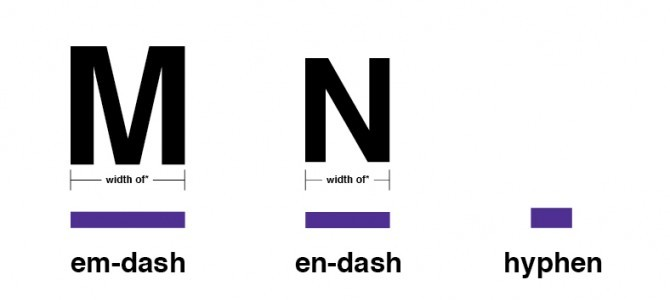

chapter15.2--handout
Background Information
西方人也爱大蒜？
今天的内容里有一个很有意思的细节，Cohn睡觉的时候脖子上还挂着当地人给他戴的一圈大蒜（Around his neck and on his chest was a big wreath of twisted garlics）. 其实大蒜在西餐里也几乎有着和在中餐里相等的地位，可谓是中西餐桌通杀。
大蒜最早可能出现在古埃及地区，比如在埃及的艾玛哈萨（El-Mahasna）发现的陵墓中，就有大蒜模样的泥塑——一个小圆柱被瓣状物包围着，距今约公元前3700年，足以说明大蒜的重要性非同小可。
犹太人也有着悠久的嗜食大蒜的传统。据圣经记载，当年摩西带着族人逃出埃及，前往上帝“应许之地”——迦南（今以色列和巴勒斯坦，以及黎巴嫩和叙利亚临海的部分地区）。因为食物不足、路途劳累，不少人怀念起在埃及吃过的鲜鱼、西瓜还有美味的大蒜。这是圣经里唯一一次提到大蒜，也从侧面说明了大蒜在古犹太人生活中的重要地位。
值得一提的是，在被放逐流散的岁月中，犹太人将大蒜带到了世界上的其他地方，这算得上是犹太文明的诸多贡献之一。在很多国家，大蒜被认为和犹太人息息相关，比如俄罗斯人曾就这种食物的杀菌作用说，大蒜是犹太人的“盘尼西林”（Penicillin）；在今天德国柏林的犹太人博物馆里，还保存有一个巨大的大蒜模型。
现在的以色列人，很多并非正统犹太教徒，但爱吃大蒜的习俗一直延续下来。在这里，大蒜不再是简单的调料，而是大摇大摆进入当地人的正餐菜单中，并且不断推陈出新。以色列最流行的法拉费尔、胡姆斯等小吃，里面都有蒜泥或蒜汁。而用整粒大蒜烹制海鲜，更是地中海沿岸的流行做法。
还有人声称大蒜一开始并不是作为食物的调料被使用的，而是作为一种药材。后来蒜头还被赋予了一些神奇的用途——比如帮逝去的法老王抵挡邪恶生物；在中世纪时，大蒜还被用来对抗吸血鬼。
Vocabulary
skyrocket
n. 火箭式焰火（a firework that goes high into the air before exploding into colored lights）
原文：Going down the dark streets to the hotel we saw the skyrockets going up in the square.
在黑暗的街上走回旅馆的时候，我们看见广场上在放焰火。
💧skyrocket 还可以作动词，表示“猛升，激增”（to increase greatly）, 比如：The trade deficit has skyrocketed.
贸易逆差已经急剧增长。
resolve
vt.& vi. 决心；决定（to make a firm decision to do sth）
原文：I remember resolving that I would stay up all night to watch the bulls go through the streets at six o'clock in the morning...
我记得自己决定了要通宵不睡，就等着第二天清晨六点看牛群过街的场景……
💧resolve 表示“下定决心”，名词形式也就是resolution. 比如“制定新年愿望（计划）”就可以说make New Year's resolutions.
Crush Your Problems

He blew it up, his cheeks puffing ahead of the wine-skin, and stood on the bota holding on to a chair.
他对着袋口，鼓起两颊，把酒袋吹足气，然后手扶椅背，站在酒袋上。
💧表达精讲
①his cheeks puffing ahead of the wine-skin 可以看成一个插入的现在分词结构，作伴随状语；puff表示“膨胀起，鼓起”的意思，这句话可以理解为“他的腮帮子鼓得比酒袋都要胀”；
②holding on to a chair 的主语仍然是he而不是bota哦~ hold on to表示“紧紧握住”，还可以引申为“坚持”的意思，比如：Hold onto the railing so that you don't lose your balance.（抓紧扶手，这样你就不会失去平衡了。）


He would not let me buy one in return, but said he would take a rinse of the mouth from the new wine-bag.
他不让我买酒回请他，不过愿意从我的酒袋里喝一口漱漱嘴。
💧表达精讲
take a rinse of the mouth 是“漱口”的意思，rinse表示“漂洗，冲洗”；这里并不是说要拿酒来漱口（喝一口再吐掉），而是稍微尝一口，让嘴里过一遍酒（表示客气）。
我们介绍过一个和rinse“漱口”有关的俚语：rinse (someone's)mouth out (with soap) “用肥皂水给某人洗嘴”；一般在小孩做错事的时候，大人就会以这个为恐吓以表严惩，比如： If you kids don't stop cussing in this house, I'm going to rinse your mouths out with soap!（如果你们再继续说脏话，我就要拿肥皂水给你们好好把嘴洗一洗了！）

He tipped the big five-litre bag up and squeezed it so the wine hissed against the back of his throat.
他把容量为五公升的大酒袋倒过来，双手一按压，酒就咝咝地喷进他的嗓子眼。
💧表达精讲
hissed against the back of his throat 这个表达很生动，against表明了酒是一股劲直喷进他的嘴里，所以直接抵在了嗓子眼的后壁上，如果改成hissed into his throat就没有这种豪爽的气势了。

Every one took a drink, tipping the wine-skin at arm's length.
每人伸直胳膊，把酒袋倒过来喝一口。
💧表达精讲
tip 表示“倾斜，倾倒”（to pour something）, at arm's length要联系前文来理解：在Jake和Bill去Burguete的车上，当地的农民向他们示范如何正确地用酒袋喝酒的时候，就是把胳膊伸得又直又高（He was a young fellow and he held the wine-bottle at full arms' length and raised it high up...）

"He's not dead," Mike said. "I know he's not dead. He's just passed out on Anis del Mono."
“他没有死，”迈克说。“我知道他没有死。他只不是喝了茴香酒后醉倒了。”
💧表达精讲
pass out 也就是“昏倒”（to faint or collapse）的意思，比如：He felt sick and dizzy and then passed out. （他感觉恶心，眩晕，接着就昏倒了。）

It tasted of licorice and warmed all the way.
这酒有甘草味，从嗓子眼一直热到肚子里。
💧表达精讲
①taste of 表示“有……味道”（to have the hint of a certain flavor）, 比如：This ice cream tastes of apricots.（这个冰激凌有杏仁的味道。）
②all the way 有“从头到尾”（from the beggining to the end）的意思，这里可以理解为从喝进嘴里到一直流到肚子里。

Down the side streets that led to the square we saw the square solid with people, those in the centre all dancing.
从通往广场的小巷望过去，广场上人头攒动，广场中央的人都在翩翩起舞。
💧表达精讲
be solid with people 指“人群围得水泄不通”，solid本义是“固体的，坚固的”，可以引申为一点缝隙都没有，或者连续不中断的，比如：The lecture lasted two solid hours.（这堂课上了整整两个小时。）
Content Analysis
我们昨天分析的第一条线索里提到，在狂欢节上，人们的价值观念也在发生变化，比如对于“不公平交易”这件事似乎也是可以容忍的——
💧Clue 1:The unfair deal is accepted during the fiesta.
Evidence 1: At the counter the girl filled the two wine-skins for me. One held two litres. The other held five litres. Filling them both cost three pesetas sixty centimos.
柜台的女堂倌给我往这两个皮袋里灌酒。一个装了两公升，另一个装了五公升。装两袋酒花了三比塞塔六十生丁。
Evidence 2: It was a big meal at the hotel. It was the first meal of the prices being doubled for the fiesta, and there were several new courses.
旅馆的这顿晚餐异常丰盛。这是第一顿节日饭菜，价钱贵一倍，多加了几道菜。
首先是在酒馆里的时候，两个酒袋灌的量不一样，其次是在旅馆吃饭价钱贵了一倍。这一段细节描写说明了Jake在心里其实算计得很清楚，但表面上却一声不吭。
在狂欢节上颠覆的另一件事还有——Cohn居然喝醉了。Jake在前面的内容里提到过，在他们这一伙人里，Cohn是唯一一个从不喝醉酒的（Mike was a bad drunk. Brett was a good drunk. Bill was a good drunk. Cohn was never drunk. — Chapter 14）. 但是在今天的故事里，Cohn不仅喝醉了，还倒在酒馆的后厢里呼呼大睡——
💧Clue 2:Cohn should get drunk and pass out.
Evidence 1: "Where's Cohn?"
"He's passed out," Brett called. "They've put him away somewhere."
“科恩在哪里呢？”
“他晕过去了。”勃莱特说。“他们应该是把他带到哪休息了。”
Evidence 2:In a back room Robert Cohn was sleeping quietly on some wine-casks. It was almost too dark to see his face. They had covered him with a coat and another coat was folded under his head. Around his neck and on his chest was a big wreath of twisted garlics.
在一间里屋里，罗伯特·科恩安详地睡在几只酒桶上。屋里很暗，简直看不清他的脸。人家给他盖上一件外衣，叠起了另外一件外衣枕在他头下面。他脖子上套着一个用蒜头拧成的大花环。
在Jake的描述里，狂欢节似乎也带上了一层魔幻的性质。主角们的行为虽然有悖于日常，但又是合情合理的。这也为接下来要发生的故事埋下了伏笔。
大家可以再回到原文仔细品味这一段话，它几乎也能完美地用来形容战争的性质——激烈、持久、高昂、不计代价和后果。这在一定程度上也解释了Jake为什么深为狂欢节着迷并且每年都前来参加。
Today's Bonus
💧英语里最容易混淆的标点符号
我们平时很强调的“语法正确”里 ，大部分人都忽略了的一项是“标点正确”。在英语里标点不只用来断句，它还会影响词语的构成、分句的组合，甚至含义的表达。比如今天我们要介绍的三个在英语里最容易混淆的标点符号，虽然看起来都差不多，但其实各有门道。我们先来看看它们在句子里分别长什么样子：
non-English-speaking peoples
（非英语民族）
the post–World War II years
（二战后的岁月）
She outlined the strategy—a strategy that would, she hoped, secure the peace.
（她大致规划了一个策略——这个策略是她希望可以用来维持和平局面的。）
大家认出了几个呢？答案揭晓↓
第一个hyphen其实也就是我们说的“连字符”，这个最好理解了，它的用处就是构成复合词（compound）, 大致可以分为以下几类：
①复合动词
sleep-walk 梦游
sun-bathe 做日光浴
white-wash 粉刷
②复合名词
sleeping-pills 安眠药
double-dealer 两面派
take-away 熟食
③复合形容词
noble-minded 高尚的
easy-going 好说话的
new-born 新生的
细心的大家可能会发现，第二个例子（the post–World War II years）里不也是把两个词连起来么？为什么它不叫hyphen而是en-dash呢？我们再仔细看一下这里的复合结构：post–World War II（注意World War II本身就是一个复合词，只不过把连字符“-”隐藏了没写出来而已。）
所以en-dash（也可以称作短破折号）的第一个用法其实就是相当于hyphen的升级版，当连接的两个词中有一个本身就是复合词的时候，就要把hyphen替换为稍长一点的en-dash了。我们在例句里对比一下：
Hyphen: It was just one of many changes in this post-Clinton era.
（这只是“后克林顿时代”的诸多改变之一。）
En dash: It was just one of many changes in this post–New Deal era.
（这只是“后（罗斯福）新政时代”的诸多改变之一。）
Hyphen: He submitted his manuscript to a print-only publisher.
（他把手稿提交给了只印刷纸质出版物的出版商。）
En dash: He submitted his manuscript to an e-book–only publisher.
（他把手稿提交给了只出版电子书的出版商。）
以上介绍的都属于现代的交谊舞，后来的交谊舞则以拉丁舞为主，比如伦巴（Rumba）, 恰恰（Cha Cha Cha）, 桑巴（Samba）, 斗牛（Paso Doble）, 牛仔舞（Jive）等等，这些舞蹈风格带着拉丁民族特有的热情奔放，如果能掌握一种也是可以在舞会上羡煞旁人的哦~
除此以外，en-dash还可以用来连接数字或者是方向名词，这时候它就相当于介词“to”或“through”，比如：
You will find this material in chapters 8–12.
（你可以在第8章到第12章的内容里找到这个材料。）
There is a north–south railway in the same area as the highway that runs east–west.
（这片区域分别有一条南北向的铁路以及一条东西向的公路。）
最后我们再来看看和汉语里的破折号用法最相近的em-dash（长破折号）。它在英语标点里可以算是最神通广大的一个了，只要有逗号、冒号、分号、括号甚至句号的地方，都可以用它来替换而且完全不会出错（必备偷懒神器！）
①代替逗号（让句子结构看起来更清晰）
And yet, when the car was finally delivered—nearly three months after it was ordered—she decided she no longer wanted it.
结果，在下单后的三个月，汽车厂家终于给她发货了，她却不想要这辆车了。
②代替括号（比括号的强调语气更重）
Jake studied (all night) for the grammar test.
Jake studied—all night—for the grammar test.
Jake为了语法考试学了一整晚。
③代替句号（句子更简洁）
One thing's for sure. The thing is that he doesn't want to face the truth.
One thing’s for sure—he doesn’t want to face the truth.
可以确定的一件事是——他不想面对现实。
和冒号一样，长破折号是可以直接把两个完整句连起来而不必考虑使用连词的。
学会了这三个标点的用法，记得检查自己的写作里有没有犯错哦~
